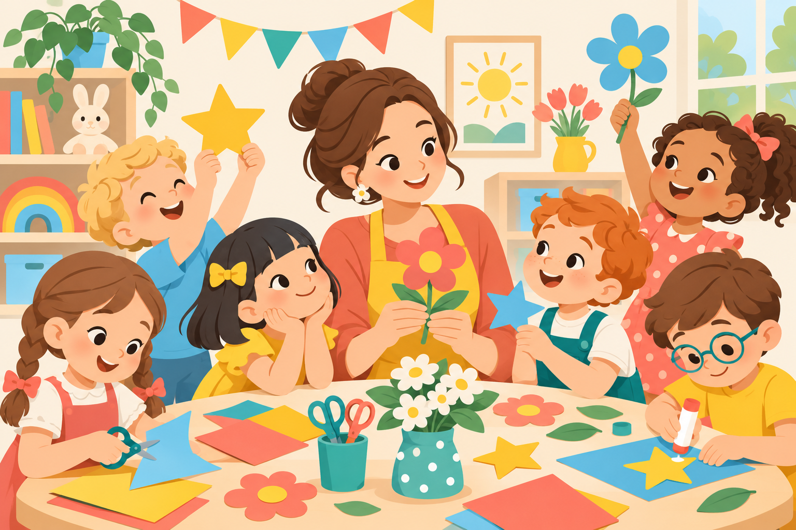

творчество15 мин
🎨
Рисуем настроение
Цветные кляксы превращаются в истории. Для тихого утра и больших разговоров.
Открыть идею ↗Помогаем воспитателям создавать маленькие чудеса — легко, с радостью и любовью к детям.

Цветные кляксы превращаются в истории. Для тихого утра и больших разговоров.
Открыть идею ↗Нежная зарядка с потягушками, улыбками и щепоткой фантазии.
Открыть идею ↗Одно новое слово — целая вселенная. Играем, объясняем, сочиняем.
Открыть идею ↗Собрали простые практики, которые возвращают силы прямо в течение рабочего дня.
Читать советы →«Я вижу, что тебе трудно расставаться. Я рядом, а мама придёт после прогулки».
Возраст: 2–3 года — короткие ритуалы и любимая игрушка; 4–5 лет — заранее проигрывайте сценарий дня; 6–7 лет — поручите важную роль помощника.
«Я не дам толкаться. Можно сказать: “Отдай, пожалуйста”, или позвать меня».
Возраст: 2–3 года — короткие фразы и помощь телом; 4–5 лет — карточки эмоций; 6–7 лет — совместный поиск решения и правила группы.
«Давай найдём место, где телу станет спокойнее. Я посижу рядом».
Возраст: 2–3 года — ритмичное покачивание и песенка; 4–5 лет — дыхательные игры; 6–7 лет — шкала эмоций от 1 до 5.
«Можешь сначала просто послушать. Когда будешь готов, я помогу начать».
Возраст: 2–3 года — игра рядом со взрослым; 4–5 лет — парные задания; 6–7 лет — постепенные мини-презентации.
«Мне нужна минута, чтобы восстановить спокойствие. Я вернусь к группе с ясной головой».
Для взрослых: забота о себе — часть безопасности детей; при длительной усталости обращайтесь к руководителю и специалисту.
Тематические дни, сезонные игры и поводы для улыбки — всё в одном месте.
Открыть календарь →Присоединяйтесь к сообществу воспитателей, где можно вдохновляться, задавать вопросы и делиться своим.
Присоединиться ↗